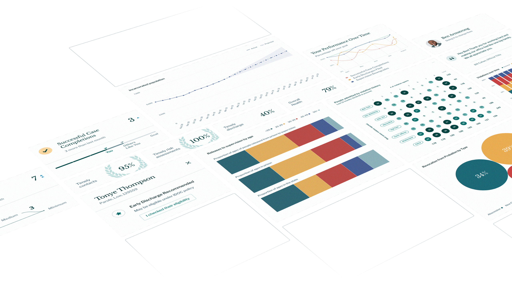
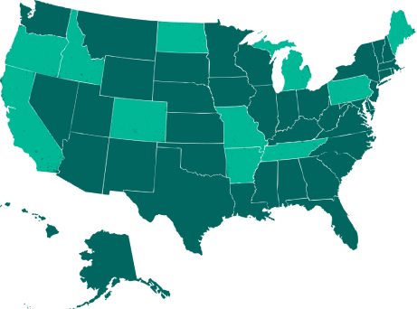

Every person who safely transitions back to the community is a step toward a better society.
Criminal justice leaders use Recidiviz to get a real-time picture of their system, diagnose
issues, and drive meaningful changes.
We are a non-profit that partners with state criminal justice agencies to advance their use of
data and reduce incarceration.
intake an agency’s disjointed data
deploy tools for all levels of decision making
improve outcomes for justice-impacted individuals
A human–centered definition of success.
Our approach is shaped by the perspective and experience of people impacted by the justice system.
Together, we are focused on restoring equity and supporting success in the community.


TED Talks
The New York Times
StateScoop
Associated Press
Time
Freethink
See the forest and the trees.
The criminal justice system can't support safe, whole communities without feedback on what’s working and what’s not. We stitch together data from fragmented systems to provide decision-makers with the information they need to improve outcomes. With this data, we surface opportunities to safely chart a path to a smaller system, and to track the impact of policy and practice changes over time.



Get the right information to the right person at the right time.
For Leaders
Set goals, forecast the impact of policy or practice changes, and track their outcomes across your agency.
For Line Staff
Track probation and parole outcomes, see what’s leading to success, and reduce recidivism with our case management system.
For the Public
Use open source code, public data, interactive tools, and data visualizations to understand the state of incarceration, promote accountability, and conduct research.
For Policymakers and Advocates
Project the impact of policies on carceral, fiscal, and community outcomes. Understand where disparities begin, where they grow, and whether a policy is likely to increase or reduce them.
Recidiviz in the Press
TED Talks
2.22.22
Meet the 2022 class of TED Fellows
Correctional News
2.22.22
New Partnership Aims to Help Transform Prison Conditions
Department of Justice
1.26.22
Justice Department Establishes Initiative to Strengthen States’ Use of Criminal Justice Data
The New York Times
12.27.21
The 2021 Good Tech Awards
Corrections1
11.18.21
Maine DOC to better harness correctional data to improve outcomes
Right on Crime
9.9.21
Together, We Can Make Mississippi Safer and Reentry-Ready
Where we work
We're expanding. Get in touch and start turning your data into action.
